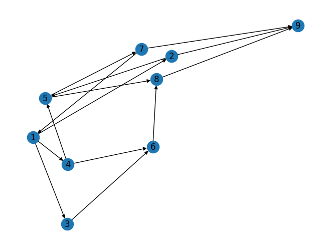

NetworkxDigraph#
pip install networkx
Looking in indexes: https://pypi.org/simple, https://us-python.pkg.dev/colab-wheels/public/simple/
Requirement already satisfied: networkx in /usr/local/lib/python3.10/dist-packages (3.1)
Mengimport library NetworkX sebagai nx dan Membuat sebuah directed graph#
import networkx as nx
G = nx.DiGraph()
Menambahkan edge-edge pada graph#
G.add_edge(1, 2)
G.add_edge(1, 3)
G.add_edge(1, 4)
G.add_edge(2, 5)
G.add_edge(4, 5)
G.add_edge(3, 6)
G.add_edge(4, 6)
G.add_edge(5, 7)
G.add_edge(6, 8)
G.add_edge(7, 9)
G.add_edge(8, 9)
G.add_edge(2, 9)
G.add_edge(5, 8)
G.add_edge(7, 1)
nx.draw(G, with_labels=True)

Menghitung pagerank menggunakan method nx.pagerank()#
nx.pagerank(G, alpha=0.85)
{1: 0.0754684514178472,
2: 0.062416863172959705,
3: 0.062416863172959705,
4: 0.062416863172959705,
5: 0.09408881551992201,
6: 0.12061617883655987,
7: 0.08102176279375409,
8: 0.18354510310914324,
9: 0.25800909880389444}
Implementasi algoritma PageRank dengan menggunakan iterasi secara manual menggunakan library NetworkX#
def pagerank_iter(G, alpha=0.85, max_iter=100, tol=1.0e-6):
pr = {node: 1/G.number_of_nodes() for node in G.nodes()}
print(f"Iteration 0: {pr}")
for i in range(max_iter):
old_pr = pr.copy()
diff = 0
for node in G.nodes():
incoming_edges = list(G.in_edges(node))
if len(incoming_edges) == 0:
pr[node] = 0
else:
incoming_weights = sum([old_pr[edge[0]] / len(G.out_edges(edge[0])) for edge in incoming_edges])
pr[node] = (1 - alpha) / G.number_of_nodes() + alpha * incoming_weights
diff += abs(pr[node] - old_pr[node])
print(f"Iteration {i+1}: {pr}")
if diff < tol:
break
return pr
pagerank_iter(G, alpha=0.85, max_iter=100)
Iteration 0: {1: 0.1111111111111111, 2: 0.1111111111111111, 3: 0.1111111111111111, 4: 0.1111111111111111, 5: 0.1111111111111111, 6: 0.1111111111111111, 7: 0.1111111111111111, 8: 0.1111111111111111, 9: 0.1111111111111111}
Iteration 1: {1: 0.06388888888888888, 2: 0.04814814814814815, 3: 0.04814814814814815, 4: 0.04814814814814815, 5: 0.1111111111111111, 6: 0.15833333333333333, 7: 0.06388888888888888, 8: 0.15833333333333333, 9: 0.20555555555555555}
Iteration 2: {1: 0.043819444444444446, 2: 0.03476851851851852, 3: 0.03476851851851852, 4: 0.03476851851851852, 5: 0.0575925925925926, 6: 0.07805555555555554, 7: 0.06388888888888888, 8: 0.19847222222222222, 9: 0.19886574074074073}
Iteration 3: {1: 0.043819444444444446, 2: 0.029082175925925928, 3: 0.029082175925925928, 4: 0.029082175925925928, 5: 0.04621990740740741, 6: 0.06099652777777778, 7: 0.041143518518518524, 8: 0.10749074074074072, 9: 0.2272974537037037}
Iteration 4: {1: 0.03415266203703704, 2: 0.029082175925925928, 3: 0.029082175925925928, 4: 0.029082175925925928, 5: 0.041386516203703705, 6: 0.053746440972222226, 7: 0.03631012731481482, 8: 0.08815717592592592, 9: 0.13787971643518515}
Iteration 5: {1: 0.03209847077546297, 2: 0.026343254243827163, 3: 0.026343254243827163, 4: 0.026343254243827163, 5: 0.041386516203703705, 6: 0.053746440972222226, 7: 0.034255936053240746, 8: 0.07994041087962964, 9: 0.11939199508101853}
Iteration 6: {1: 0.031225439489293988, 2: 0.02576123338638118, 3: 0.02576123338638118, 4: 0.02576123338638118, 5: 0.03905843277391976, 6: 0.0502543158275463, 7: 0.034255936053240746, 8: 0.07994041087962964, 9: 0.11037067179060572}
Iteration 7: {1: 0.031225439489293988, 2: 0.025513874521966635, 3: 0.025513874521966635, 4: 0.025513874521966635, 5: 0.03856371504509067, 6: 0.049512239234302674, 7: 0.03326650059558257, 8: 0.07598266904899692, 9: 0.11012331292619118}
Iteration 8: {1: 0.03080492941978926, 2: 0.025513874521966635, 3: 0.025513874521966635, 4: 0.025513874521966635, 5: 0.038353460010338306, 6: 0.049196856682174134, 7: 0.03305624556083021, 8: 0.07514164890998748, 9: 0.10623359478327246}
Iteration 9: {1: 0.030715571030019505, 2: 0.025394730002273627, 3: 0.025394730002273627, 4: 0.025394730002273627, 5: 0.038353460010338306, 6: 0.049196856682174134, 7: 0.03296688717106045, 8: 0.07478421535090846, 9: 0.10542936927534469}
Iteration 10: {1: 0.03067759371436736, 2: 0.025369411791838863, 3: 0.025369411791838863, 4: 0.025369411791838863, 5: 0.03825218716859925, 6: 0.04904494741956554, 7: 0.03296688717106045, 8: 0.07478421535090846, 9: 0.10503693701360584}
Iteration 11: {1: 0.03067759371436736, 2: 0.02535865155240409, 3: 0.02535865155240409, 4: 0.02535865155240409, 5: 0.0382306666897297, 6: 0.04901266670126122, 7: 0.03292384621332135, 8: 0.07461205151995207, 9: 0.10502617677417106}
Iteration 12: {1: 0.030659301307328246, 2: 0.02535865155240409, 3: 0.02535865155240409, 4: 0.02535865155240409, 5: 0.03822152048621015, 6: 0.04899894739598189, 7: 0.03291470000980179, 8: 0.07457546670587382, 9: 0.10485697200905922}
Iteration 13: {1: 0.03065541417083243, 2: 0.025353468703743005, 3: 0.025353468703743005, 4: 0.025353468703743005, 5: 0.03822152048621015, 6: 0.04899894739598189, 7: 0.03291081287330598, 8: 0.07455991815989059, 9: 0.10482198778059693}
Iteration 14: {1: 0.030653762137821713, 2: 0.025352367348402523, 3: 0.025352367348402523, 4: 0.025352367348402523, 5: 0.03821711506484822, 6: 0.048992339263939005, 7: 0.03291081287330598, 8: 0.07455991815989059, 9: 0.10480491677281947}
Iteration 15: {1: 0.030653762137821713, 2: 0.025351899272382822, 3: 0.025351899272382822, 4: 0.025351899272382822, 5: 0.03821617891280882, 6: 0.04899093503587989, 7: 0.03290894056922716, 8: 0.0745524289435753, 9: 0.10480444869679978}
Iteration 16: {1: 0.030652966408588216, 2: 0.025351899272382822, 3: 0.025351899272382822, 4: 0.025351899272382822, 5: 0.038215781048192066, 6: 0.04899033823895477, 7: 0.03290854270461042, 8: 0.07455083748510832, 9: 0.10479708820138992}
Iteration 17: {1: 0.030652797316126097, 2: 0.025351673815766664, 3: 0.025351673815766664, 4: 0.025351673815766664, 5: 0.038215781048192066, 6: 0.04899033823895477, 7: 0.032908373612148295, 8: 0.07455016111525985, 9: 0.10479556636923087}
Iteration 18: {1: 0.030652725451829697, 2: 0.025351625906235728, 3: 0.025351625906235728, 4: 0.025351625906235728, 5: 0.038215589410068335, 6: 0.048990050781769164, 7: 0.032908373612148295, 8: 0.07455016111525985, 9: 0.1047948237715014}
Iteration 19: {1: 0.030652725451829697, 2: 0.025351605544685085, 3: 0.025351605544685085, 4: 0.025351605544685085, 5: 0.03821554868696704, 6: 0.04898998969711722, 7: 0.03290829216594571, 8: 0.07454983533044951, 9: 0.10479480340995076}
{1: 0.030652725451829697,
2: 0.025351605544685085,
3: 0.025351605544685085,
4: 0.025351605544685085,
5: 0.03821554868696704,
6: 0.04898998969711722,
7: 0.03290829216594571,
8: 0.07454983533044951,
9: 0.10479480340995076}